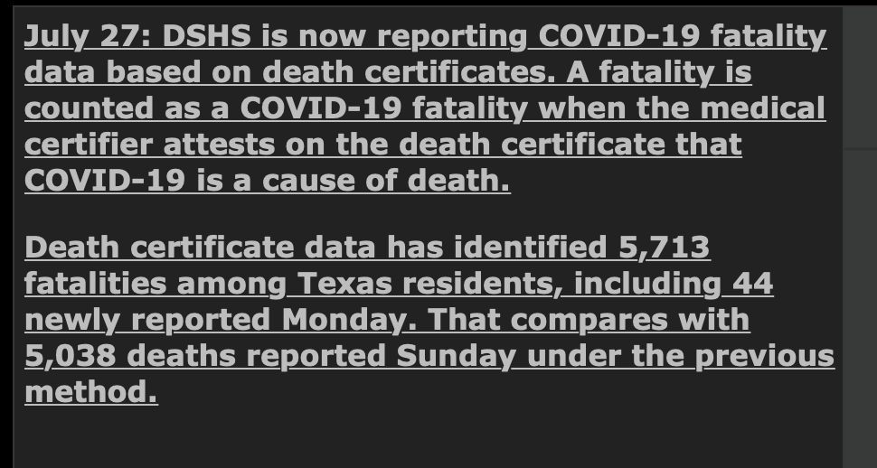
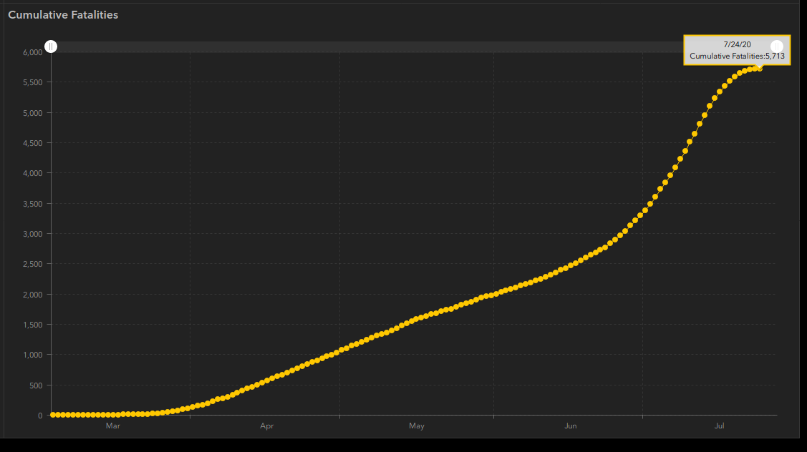

[TX] Texas added ~600 deaths to their count today but the deaths are from previous dates. We should back-fill them
State or US: Texas
Describe the problem 
Link to data source https://www.dshs.texas.gov/coronavirus/TexasCOVID19DailyCountyFatalityCountData.xlsx
muamichali added the label Data quality on July 27, 2020 at 3:10 pm
space-buzzer commented on July 29, 2020 at 1:16 pm
We undid the backfill, based on internal discussion, because the available data for backfilling only reaches to 7/24, which makes the last week death numbers flat, but this is not the case. We’ll do it again, once Texas publishes a time series up to today For now, it’ll look like there was a big spike on 7/27
space-buzzer closed the issue on July 31, 2020 at 12:05 pm
space-buzzer commented on July 31, 2020 at 12:06 pm
This is blocked now, and we cannot backfill based on the cumulative time series published on TX’s dashboard because all the recent additions are either not visible in the cumulative time series, or added historically, so daily increments will not presented correctly
We’ve updated the time series for death (by date), to account for the new fatality reporting TX is doing. The new time series matches the site dashboard, and accounts for all new death added

TX - Analysis #682 [TX] death.pdf